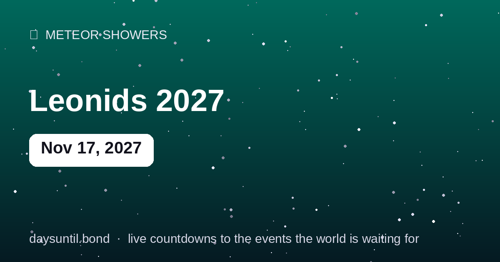

How Many Days Until Leonids 2027?
Leonids 2027 falls on Wednesday, November 17, 2027.
The live counter above updates every second in your local time zone. The date and weekday are shown in the event details.

Quick facts
| Peak night | November 17–18, 2027 |
|---|---|
| Best viewing | After midnight to pre-dawn |
| Equipment | None — naked eye only |
About Leonids 2027
The Leonids meteor shower peaks on the night of November 17, 2027 (November 17/18). The legendary storm shower: usually 10–15 meteors per hour, but every ~33 years it erupts into thousands per hour (last storm: 2001). Radiates from the Lion.
Best practice for any meteor shower: dark sky, no telescope, eyes adjusted for 30 minutes, look halfway up toward the radiant's constellation. The counter above runs to the peak night; meteors are visible several nights either side.
Leonids 2027: expected peak
The Leonid meteor shower is expected to peak around November 17–18, 2027. The shower is active in November, but its intensity varies substantially from year to year. Most returns are modest; exceptional meteor storms are rare and are associated with the debris distribution along the parent comet's orbit.
In an ordinary year, the Leonids may produce roughly 10–15 meteors per hour under ideal conditions. That is a theoretical dark-sky rate, not a guaranteed count. Check an updated forecast close to the event for the predicted peak hour and any unusual activity.
Why the Leonids sometimes produce storms
The Leonids originate from debris shed by Comet 55P/Tempel–Tuttle. The comet returns to the inner Solar System about every 33 years, and its orbit leaves streams of particles that Earth encounters in November. When Earth crosses a dense filament, activity can rise dramatically and produce a meteor storm.
The 1833 and 1966 storms are famous historical examples, and the 1999–2002 period produced several strong displays. A storm is not expected every year, however. The ordinary annual Leonid return is much quieter, so forecasts should be treated carefully rather than assuming a spectacular outburst.
How to observe the Leonids
The radiant lies in Leo, which rises later in the evening and climbs toward dawn. Observing after midnight is usually more productive. Choose a dark location with a broad view, let your eyes adapt and scan the sky rather than staring directly at the radiant.
November nights can be cold, so bring suitable layers and a reclining chair. Check the local forecast before travelling and avoid bright phone screens. If the sky is clear, give the shower at least an hour: meteor activity is intermittent, and several quiet minutes can be followed by a short burst.
Understanding the Leonids' predicted rate
The zenithal hourly rate assumes ideal conditions: a dark sky, the radiant overhead and an unobstructed view. The number visible from a real location is lower because the radiant may be low, some of the sky is blocked, and faint meteors disappear in light pollution or moonlight.
A high headline rate in a forecast should be read as a modelled estimate, not a promise. The Leonids are especially variable because the densest debris filaments do not spread evenly along the comet's orbit.
Leonids among November and December sky events
The Leonids are followed by the Geminids in December, another major annual shower with a different parent body and generally stronger ordinary-year activity. Comparing the two helps observers decide whether to plan one late-autumn session or return to the sky in mid-December.
Use the annual meteor shower calendar to track the next peak dates, then confirm moonlight and weather for your own location. A dark, clear sky matters more than a headline rate.
Your Leonids 2027 countdown milestones
It is easier to plan against fixed points than against a number that moves. These are the dates on which the countdown to Leonids 2027 passes each marker between now and the day itself — the last one falls on Tuesday 16 November, when there will be 1 day left.
| Milestone | Day | Date | Remaining |
|---|---|---|---|
| 200 days | Saturday | 01 May 2027 | 200 days to go |
| 100 days | Monday | 09 August 2027 | 100 days to go |
| 50 days | Tuesday | 28 September 2027 | 50 days to go |
| 30 days | Monday | 18 October 2027 | 30 days to go |
| 14 days | Wednesday | 03 November 2027 | 14 days to go |
| 7 days | Wednesday | 10 November 2027 | 7 days to go |
| 3 days | Sunday | 14 November 2027 | 3 days to go |
| 1 days | Tuesday | 16 November 2027 | 1 day to go |
How the remaining time breaks down
356 days is the headline, but it is rarely the number that helps. 254 of those are weekdays and 102 fall on a weekend, which is the split that matters if you are planning around work. It is 50 weeks and 6 days, or roughly 11.7 months, or about 8,544 hours.
| Unit | Until Leonids 2027 |
|---|---|
| Days | 356 |
| Weeks | 50 weeks and 6 days |
| Months (approx) | 11.7 |
| Weekdays | 254 |
| Weekend days | 102 |
| Hours | 8,544 |
| Sleeps | 356 |
Working days are Monday to Friday and do not subtract public holidays, which vary by country and employer — the full month-by-month split is on our weekday page for Leonids 2027.